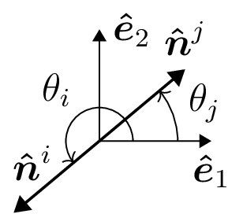
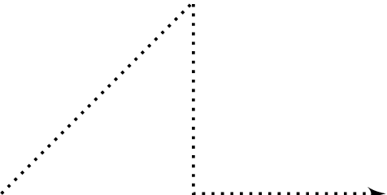
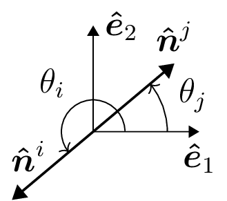

Layer Module
Toto
—
- class scatus.Layer(medium, *, h_in, h_out, name=None)
Object defining a material layer. An example role
\[\int_a^b f(x) dx= 0.\]
my caption
- exposure
Exposure in seconds.
- Type:
float
- colorspace(c='rgb')
Represent the photo in the given colorspace.
- gamma(n=1.0)
Change the photo’s gamma exposure.
- Layer.__init__(medium, *, h_in, h_out, name=None)
- Parameters:
medium (any instance of Python object exposing the material interface) – The medium properties.
h_in (float) – Position of the first interface.
h_out (float) – Position of the second interface.
name (str, optional) – Name of the layer. The default is None.
- Return type:
None.

Pipo

my caption
—